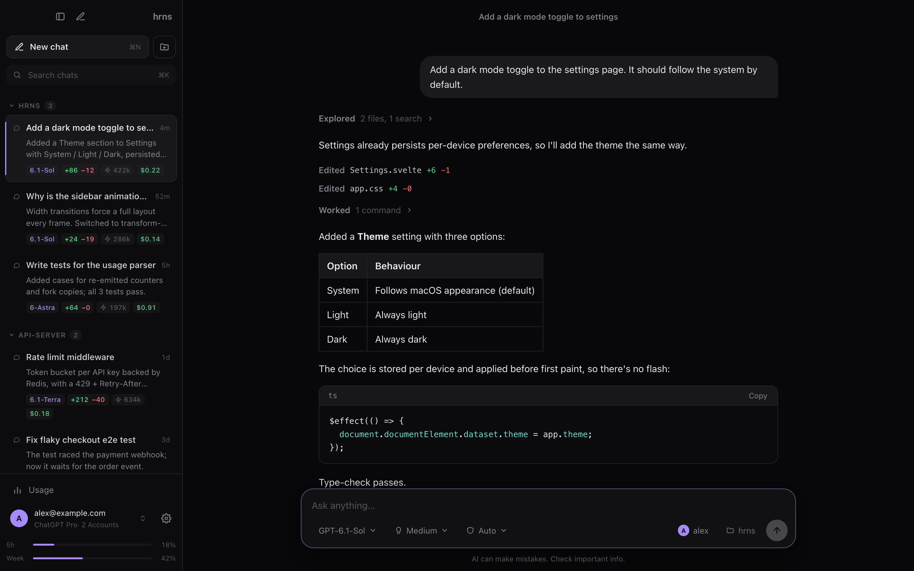
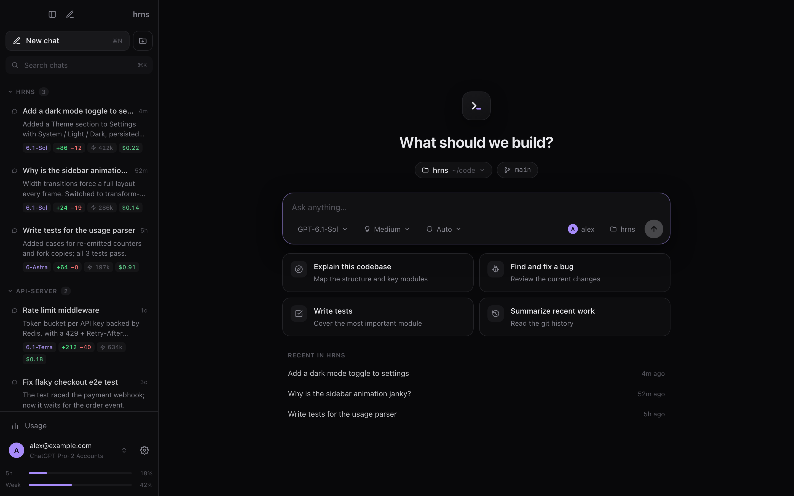
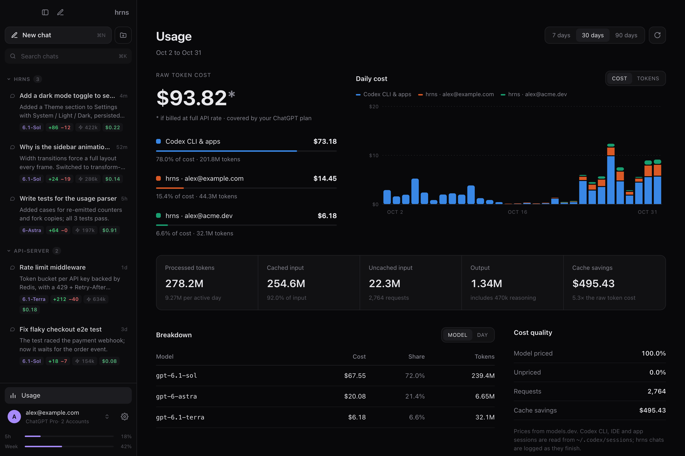
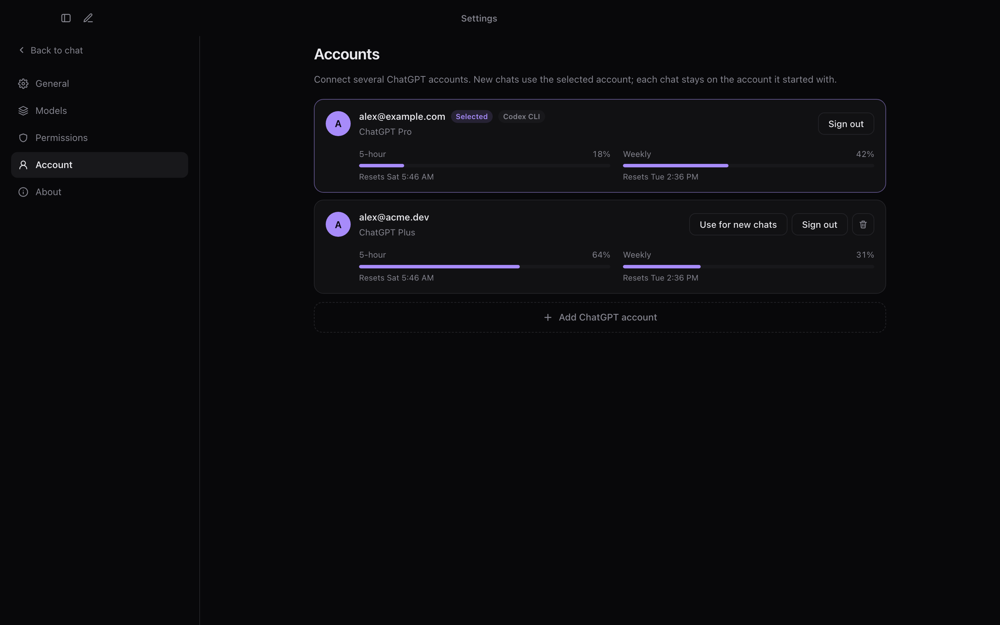
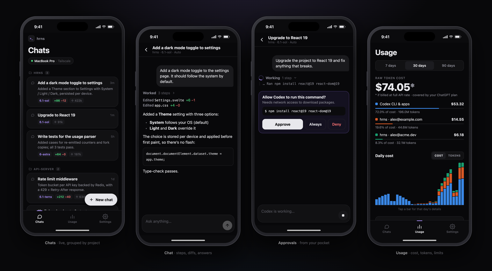

A quiet, fast home for Codex.
hrns is a desktop app for OpenAI's Codex agent, written in Rust. It runs the real agent on your ChatGPT plan, shows you every step it takes, and lets you approve its next command from your phone.
Allow Codex to run this command? It needs to run outside the sandbox.
$ bun run check

Everything Codex can do, in a window you'll keep open.
hrns drives the official codex app-server, the same backend the CLI and IDE extensions use. Nothing is re-implemented. It adds the parts a terminal can't give you.
--your-planRuns on your ChatGPT subscription
Sign in with ChatGPT, the way the Codex CLI does. Your plan pays for the work, so there's no API key and no per-token bill.
--real-agentThe actual Codex agent
Same agent instructions, plus your config.toml, MCP servers, skills and AGENTS.md.
--sandboxRead only, Auto or Full access
Every chat runs in a project folder. Auto edits and runs commands inside it and asks before going further.
--approveApprovals where you're looking
Requests appear in the chat with Approve, Approve for this chat and Deny. ⌘ ↵ approves.
--accountsSeveral ChatGPT accounts
Pick an account per chat and run them side by side. Each one shows its 5-hour and weekly limits.
--usageA ledger of every token
Daily cost and tokens by account, model and day, priced from models.dev. It includes your Codex CLI, IDE and app sessions.
--remoteYour phone as a remote
Follow chats live, send prompts, stop a turn and approve commands from a phone app, over Tailscale only.
Steps you can read at a glance.
Codex reads, searches and runs a lot before it answers. hrns folds that into one line per burst of work and opens it when you want detail.
- Plain commands. Shell wrappers are stripped; reads, searches and listings get their own labels.
- Exact edits. Settings.svelte +6 −1, with the diff one click away.
- A sidebar with context. Status, preview, model, lines changed, tokens and cost on every chat.

See what the work would have cost.
Your plan covers it. The ledger shows the scale anyway: tokens by day, the share each account used, and what prompt caching saved.
- All of your Codex use, read from Codex's own session logs, with each request counted once.
- 7, 30 or 90 days, by model or by day.
- Prices from models.dev, downloaded once and kept on your Mac.

One window, several accounts.
Keep work and personal accounts apart, or switch to a second one when the first hits its limit. Each signs in separately and shares the rest of your Codex setup.

Leave your desk. Keep approving.
Start a long task, walk away, and answer Codex from your phone. The app reaches your Mac over your private Tailscale network and nothing else.

Every chat, live
Browse chats by project, watch answers stream in, send follow-ups, stop a turn, or start a new chat in any project.
Approve from the notification
"Codex needs approval: npm install". Approve or deny from the notification, and get a ping when a turn finishes.
Paired once, private after
Scan a QR code in hrns to pair. The server listens only on your Tailscale address and every request carries your token.
A thin native layer around tools you already trust.
No bundled browser engine and no cloud relay. The interface runs in the system WebView, and a Rust core talks to Codex over stdio.
interface rust core codex app-server Svelte 5 · WebView ──IPC──▶ engine per account ──stdio──▶ one per account chat store (JSON) started on first use phone usage ledger stopped after 10 min idle Expo app ──Tailscale + token──▶ remote API (off by default)
Light on your battery
Nothing polls. Codex runs only while you use it. Streaming text repaints at most every 60 ms. If codex is the npm wrapper, hrns starts the native binary directly, so no Node.js process idles in the background.
Your data stays on your Mac
Chats, usage and prices live in ~/Library/Application Support/dev.hrns.app. hrns makes one request of its own, a price download. Codex handles the connection to OpenAI.
Build it in a few minutes.
There's no signed download yet, so you build from source. You need the Codex CLI signed in with ChatGPT, Rust and Bun.
Desktop
Sign in to Codex once, then build hrns.
$ npm i -g @openai/codex $ codex login $ git clone https://github.com/GhaythBenAbid/hrns.git $ cd hrns && bun install $ bun tauri build # .app and .dmg in src-tauri/target/release/bundle
Phone (optional)
Needs Tailscale on your Mac and phone, on the same tailnet.
$ cd mobile && npm install $ REACT_NATIVE_PACKAGER_HOSTNAME=$(tailscale ip -4) \ npx expo start --lan
- In hrns, open Settings → Remote and turn it on.
- Open the app in Expo Go and tap Scan pairing code.
Questions people ask first.
Is hrns free?
Yes. It's open source under the MIT license. The AI work runs on the ChatGPT plan you already have.
Do I need an OpenAI API key?
No. hrns signs in with your ChatGPT account through the Codex CLI. The costs on the usage page are estimates at public API prices, shown for scale.
Is it made by OpenAI?
No. hrns is an independent project and isn't affiliated with or endorsed by OpenAI. It drives the official codex app-server that ships with the Codex CLI.
Which platforms does it run on?
It's built and tested on macOS with Apple Silicon. Tauri also targets Linux and Windows, but those builds haven't been tested yet. The phone app runs on Android and iOS through Expo.
How is usage counted?
hrns reads the token_count events in Codex's session logs under ~/.codex/sessions and uses Codex's running totals so each request counts once. Chats in hrns are recorded as each turn finishes.
Can Codex change files outside my project?
Only if you allow it. Read only lets it read. Auto lets it edit and run commands inside the project folder and asks for anything else. Full access removes the sandbox. You choose per chat.
Why does the phone app need Tailscale?
So only your own devices can reach your Mac. The remote server listens on your Tailscale address alone, never on Wi-Fi or the internet, and it's off until you turn it on.
Do notifications reach a closed phone app?
Not yet. In Expo Go they arrive while the app is open or was just in the background. Push for a closed app needs a development build with Firebase, which is on the roadmap.
Give Codex a window worth keeping open.
Free, open source and local. Build it tonight.